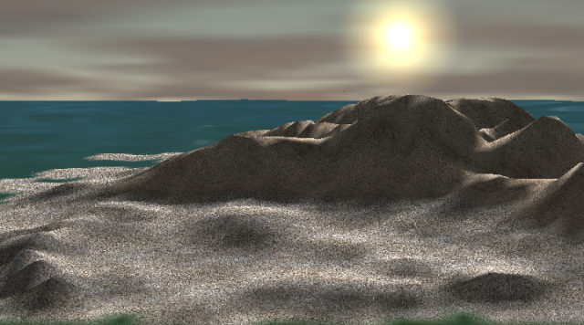

Fractal - A Direct3D Demo of Natural Phenomena
Fractal is a Direct3D demo I wrote a number of years ago to showcase real-time procedural generation of natural phenomena on modern GPU hardware (GeForce 2, at the time). The demo implements the four elements - earth, fire, air (clouds and wind), and water. Procedural generation of natural phenomena was my passion before Lambda Calculus took over my life.
It is written in C++ and makes heavy use of stochastic noise - almost everything is generated in real time with clever use of Perlin's technique. I also used Perlin noise to generate random fractals that simulate the landscape. The demo requires multiple texture units to implement detail maps, lighting, etc. In addition, I implemented Fresnel equations to simulate water transparency and color. The demo also makes use of a particle system to simulate a fire. Cubic splines are used to achieve smooth camera movement. I used vertex shaders to implement water movement, but they weren't hardware accelerated at the time.
You can download a Windows executable and the source code here (I haven't tried to build the source in years, so if you decide to do it, you're on your own).
Comments?
If you have any questions, comments, or suggestions, please drop a note at coffeemug@gmail.com. I'll be glad to hear your feedback.